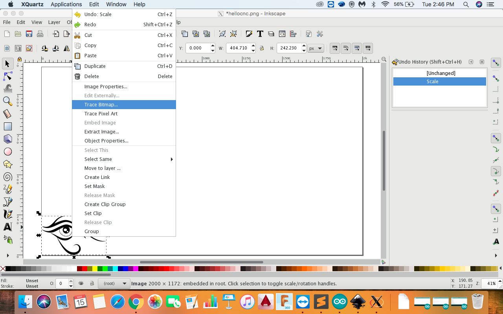
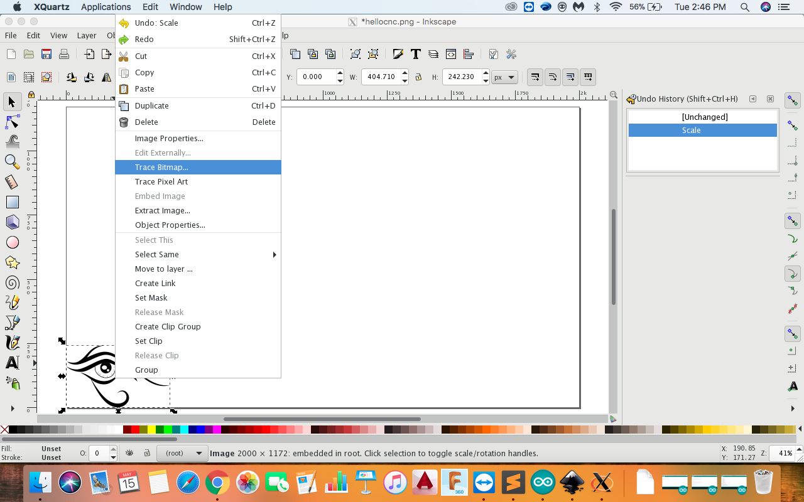

Week 15 | Mechanical Design | May 2
Fab Academy 2018 | Archive
This week we had to work on mechanical design and machine design in a group. We had to make a machine, this was the first time I was going to learn making a machine. As we had to work in group, we altogether discussed and finalize the machine we were going to make.
After the discussion, we decided to make a plotter with simple design and less use of materials. We refered the plotter design which was available on thingivers. We worked individually on the part we were comfortable, so I choosed to work in electronics as I am more good at it.
I refered the tutorial and understood the mechanism and working of the machine. Here we are using Arduino Uno, CNC Shield, two bipolar stepper and Servo motor.
Upload grbl to Arduino
First step is to upload the grbl to arduino. Steps I followed:


- Download the grbl servo zip
- Open the latest Arduino software in your computer.
- Open Sketch << Include Library << Add .Zip Library add the downloaded zip file. After doing this, you will be able to see a library called "grbl-servo-master"
- Go to File << Examples << grbl-servo-master << grbl Upload , this will open a new code window. Upload the code to your Arduino.
What is a gcode? G-code is a widely used programmng language for controlling machines like 3D printer, CNC Mchine, Milling machine, 3D printer and many industrial machines. As we do Python coding similarly we can make a gcode.
It was very challenging for me to unerstand the gcode, I refered some links to understand the gcode and could understand a bit of it, Gaurav helped me to understand the gcode after whic I was more clear with it. The best tutorial I found is from https://makezine.com/2016/10/24/get-to-know-your-cnc-how-to-read-g-code/. Everything is explained nicely in this tutorial.
Generating a gcode in Inkscape
I used this software to generate a gcode, you can download it from . The steps I followed:
- First step is to download any vector or png image and open it in the inkspace
- Reduce the image size.
- Now for tracing a bitmapLeft click on image << Right click on image << Trace bitmap.
- Now add a layer from the layre pannel Add Layer
- Now right click on the image and choose
- Go to Extensions << Gcodetools << Tools Library. A window will open, click Apply and close the window.
- Again go to Extensions << Gcodetools << Oriantation points, click apply and close the window. This will generate two points in whcih we can adjust the picture according to our machine size
- Select the text tools and change the points according to your machine.

 



Change the followig values for the machine. Use Text tool for changing the values.


Download UGS(Universal Gcode Sender)
Universal gcode sender is used to send gcode to CNC machine. This software is used at industrial level and. It has three layers: GUI, Controller and Communicator. GUI is a visual representation of the CNC machine and contains a controller object which it uses to control the machine. The controller object contains a communicator object which it uses for sending data to the CNC firmware. The controller is also responsible for encapsulating commands for the communication layer and interpreting responses, then re-encapsulating results for return to the GUI. Finally the communication layer is responsible for maintaining a connection with the CNC machine and transmitting/retrieving data. For more information see UGC Wiki
You can download UGS form here. As it is a java based software, we need to download jdk kit. JDK is Java Development Kit by which is used for opening java based software. You can download it from here

Make sure that the baud rate is 115200 It is because the cnc bord is capable to transfer 115200 bits per second and machine has to work at high speed. Select the port which you are using and then click on open.